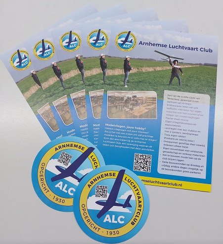

Bouwen
Een eigen bouwruimte
De ALC is één van de weinige modelvliegclubs in Nederland die in het bezit van een eigen bouwruimte. Hier zijn alle gereedschappen en materialen aanwezig, die nodig zijn om modelvliegtuigen te kunnen bouwen.
Wij, de Arnhemse Luchtvaartclub (ALC), zijn op zoek naar nieuwe leden. Wij zijn de oudste modelvliegclub die ook zelf de zweefvliegtuigen bouwt van Nederland.

Gesteund door onze sponsoren


In ons eigen clublokaal in het Arnhemse Spijkerkwartier bouwen we model zweefvliegtuigen met een spanwijdte tot wel 4 meter.
De ALC is één van de weinige modelvliegclubs in Nederland die in het bezit van een eigen bouwruimte. Hier zijn alle gereedschappen en materialen aanwezig, die nodig zijn om modelvliegtuigen te kunnen bouwen.
Naast de bouwavonden op dinsdag en vrijdag, gaan we ook regelmatig vliegen op het Rozendaalse Veld, bij de boer of we gaan naar wedstrijden.
VliegterreinErvaren leden van onze club geven les wat je moet doen om goed te leren vliegen.
Brevet vliegenWij starten deze modellen met een lijn: met de hand, een rubber of een lier opgetrokken. Electromodellen worden zo gebouwd dat de herrie van de motor tot een minimum beperkt blijft.

Ook maken we uitstapjes om helling te vliegen in de Eifel, of aan de kust bij de Maasvlakte 2.
Thomas CUP
Dank! Engelen & de Vrind en it2grow
Ready for take-off De kreet ‘Geweldige vliegavond’ was populair na een fijne avond modelvliegen bij de boer in Duiven. Een aantal ALC leden konden de…
Lees meerOnze modelvliegclub houdt open dag: kom je ook?
Interview Radio Gelderland
DLG clinic Op een fantastische mooie (thermiek technische) dag eind januari hebben een aantal leden van de Arnhemse Luchtvaart Club een clinic DLG…
Lees meer”Ik zit in mijn vliegstoel en ben met hulp van Ab Janssen mijn CX mini-RES aan het afstellen voor een strakke lancering aan het korte bungee lijntje. En dat lukte uiteindelijk prima alleen ging bij de landing van de laatste vlucht het kielvlak in tweeen….. “
 Ron · Geweldige vliegavond!
Ron · Geweldige vliegavond!
Om te ervaren of onze club bij je past wordt er voor de eerste 2 maanden geen contributie gevraagd. Loop eens binnen op de club, kom een kopje koffie drinken en kijk of er iets is wat je leuk vindt om te gaan doen.
Lees alles over lidmaatschapDe ALC is opgericht in 1930 en bestaan dus bijna 100 jaar. Veel is er uit die tijd overgebleven in ons archief, misschien moeten we nog eens diep gaan graven om meer uit die tijd te weten te komen. We hebben n.l. in ons “kantoor” een grote hoeveelheid mappen staan die waardevolle informatie bevatten uit de afgelopen 90 jaar. Ook een aantal van onze leden hebben een eigen plakboek samengesteld, in de loop der jaren hebben we meermaals de krant gehaald.
Vanaf het begin is er gevlogen op Het Rozendaals Veld bij de brandtoren. De eerste wedstrijd hebben we daar gevlogen in 1932.
We hebben nog vergunningen waar precies aangegeven staat waar brandstofmodellen mogen starten en landen, waar vrije vluchtmodellen met een lont mochten vliegen etc.
Intussen is dit ondenkbaar geworden. Geluidsoverlast en brandgevaar lagen ook toen al op de loer. Als vereniging hebben we toen gekozen voor de zgn. stiltesporten, zweefmodellen hebben onze voorkeur.
Bouwen doen we in ons clubgebouw, gevestigd in zaalsport “De Rietebeek”, Blekerstraat 6 in Arnhem, op dinsdag- en vrijdagavond van 19.00 tot 22.30 uur. Iedereen is welkom om kennis te komen maken, rond te kijken, en lid te worden.
Op de parkeerplaats is er na 20 meter een groen hek aan de linkerkant, daarachter mogen leden/bezoekers van de ALC gratis parkeren. Let op, de openbare parkeerplaatsen zijn betaald tot 23:00 u! Aan het einde van de parkeerplaats staat op links een gymzaal (sport- en spelzaal “de Rietebeek”), in dit gebouw zit de ALC. In de lange kant van het gebouw bevindt zich een stalen hek, hierachter zit de deur naar het lokaal. Als u aanbelt komt één van de leden u halen.
Op twee locaties mogen we vliegen met onze vliegtuigen, de heide op de Posbank en bij een boer in Duiven. Lees meer over ons vliegterrein.
Afhankelijk van je bouw-ervaring, bepaal je zelf wat voor model je wilt bouwen, vanaf een tekening of met een bouwdoos, dat maakt niet uit! In alle klassen zijn verschillende beginners- en gevorderden modellen voor handen.
Actieve leden met veel ervaring helpen en begeleiden nieuwe leden om ervoor te zorgen dat je eerste model ook echt vliegt.
De kosten voor de materialen variëren van een paar euro voor een eenvoudig werpmodel tot ….
Voor radiobesturing heb je behalve het vliegtuig ook een zender, een ontvanger, servo’s en accu’s nodig. Bij beginners helpen we je met de eerste aanzet, ook met deze apparatuur totdat je zelf een keuze gemaakt hebt wat je zelf wilt aanschaffen.
We spelen in op nieuwe disciplines zoals bijvoorbeeld nu het RES (Rudder, Elevator, Spoiler) vliegen. Dit zijn modelzwevers met een spanwijdte van 2 meter, maar zo licht mogelijk gebouwd om onder minimale windsterkte te kunnen vliegen. Lees meer over RES vliegen.
Iedereen is welkom om kennis te komen maken, rond te kijken, en lid te worden.